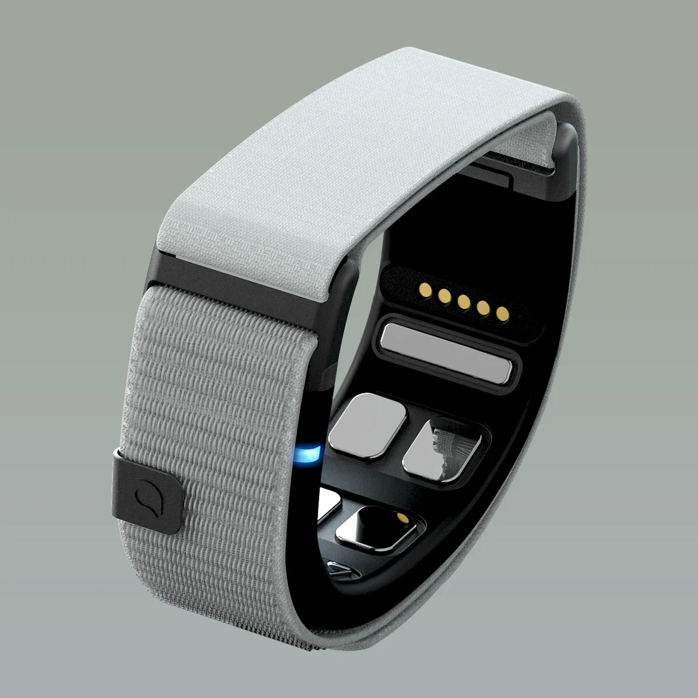
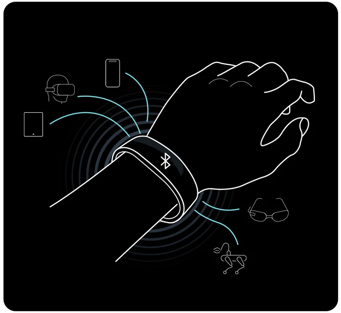
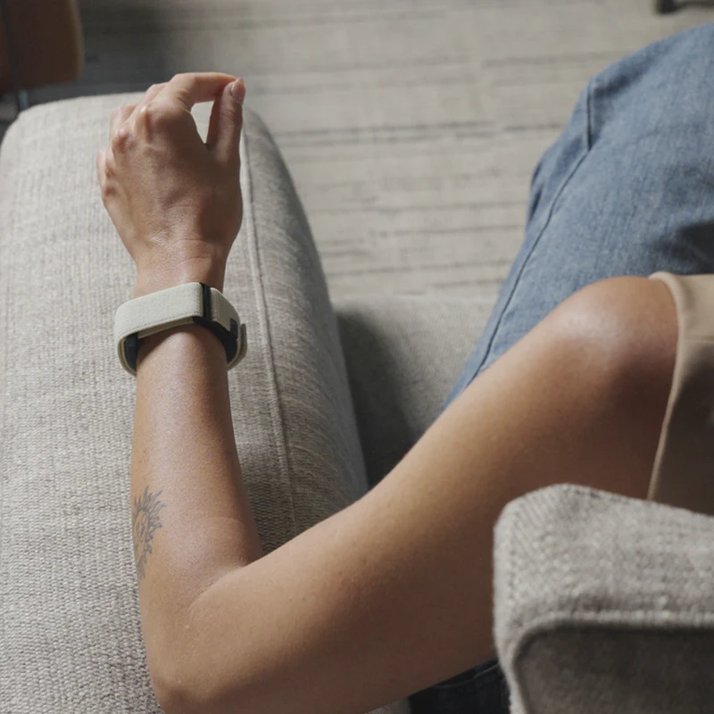
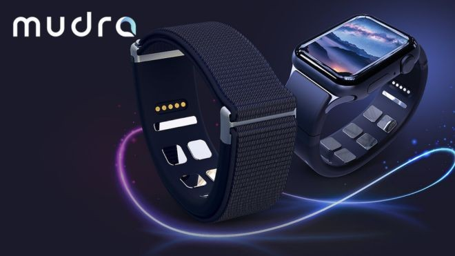

Introducción
En el ámbito de la interacción persona-ordenador (IPO) se busca mejorar la forma en que los seres humanos se comunican y operan con los sistemas informáticos. Tradicionalmente hemos utilizado dispositivos como el teclado, el ratón o la pantalla táctil. Sin embargo, nuevas tecnologías permiten interfaces más naturales, intuitivas y accesibles. Mudra Link es un dispositivo wearable lanzado en 2025 que representa un salto cualitativo en este sentido.
Características Técnicas
El Mudra Link es una pulsera/neural wristband que incorpora sensores SNC (Surface Nerve Conductance) y un IMU de 6-grados de libertad (acelerómetro + giroscopio). Su tamaño es de 22 mm de ancho por 10 mm de grosor y pesa aproximadamente 36 g.
Conectividad: Bluetooth Low-Energy. Compatible con Windows 10/11, macOS 10.15 o superior, Android 8.0 o superior.
Batería de hasta dos días con una carga completa en unos 80 minutos.
Beneficios para la Interacción y la Accesibilidad
Gracias a su sistema de detección de micro-gestos y señales musculares/neurales, el dispositivo permite controlar ordenadores, tablets, gafas AR/VR e incluso sistemas domóticos sin necesidad de teclado o ratón. Esto lo hace especialmente valioso para personas con movilidad reducida en las manos, parálisis parcial, o fatiga motriz. Por ejemplo, un usuario con destreza limitada puede mapear un gesto sencillo (como un “tap” de dedo) para ejecutar un clic, evitando la necesidad de mover la mano entera o de presionar un botón físico.
Además, la interfaz gestual se siente más intuitiva y libre, reduciendo la dependencia de periféricos tradicionales que pueden ser complicados o poco ergonómicos para ciertos usuarios.
Evolución del Dispositivo
Antes del Mudra Link, la mayoría de las interfaces IPO se basaban en teclado, ratón, pantallas táctiles o trackpads. También existen dispositivos de control gestual óptico (por ejemplo cámaras de seguimiento de mano) y púlsares gestuales. Sin embargo, estos tenían limitaciones: dependían de la visión, del entorno de luz, de la posición de la mano, o requerían grandes movimientos.
El Mudra Link mejora al usar sensores SNC/neural que no dependen de cámara ni iluminación, y al permitir gestos más finos y sutiles. Se presenta como la evolución del dispositivo previo de la marca, el Mudra Band, que estaba limitado a iOS.
Conclusión
El Mudra Link es un claro ejemplo de cómo la interacción persona-ordenador está evolucionando hacia experiencias más naturales, accesibles y universales. Su diseño gestual y neural lo hace especialmente relevante para los retos de accesibilidad, permitiendo que personas con discapacidad motriz o limitaciones manuales puedan acceder a la tecnología con mayor libertad e independencia. Como trabajo futuro, sería interesante explorar su adopción práctica en estudios clínicos de accesibilidad o su integración con entornos XR adaptados.
Referencias
- Wearable Devices. “Mudra Link | Neural Wristband to Control Your Devices.” https://mudra-band.com/products/mudra-link.
- “Mudra Link Is A $200 Meta Neural Wristband Alternative For Any Device.” UploadVR, 22 Jan 2025.
- “Mudra Link — Hand Gesture Wristband with Neural Sensors … wins CES 2025 Award.” Reddit, 2024-2025.